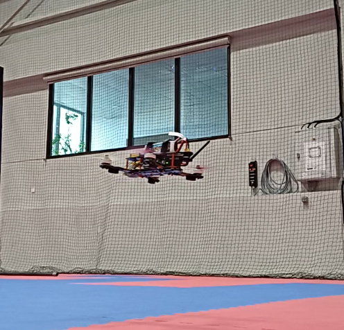
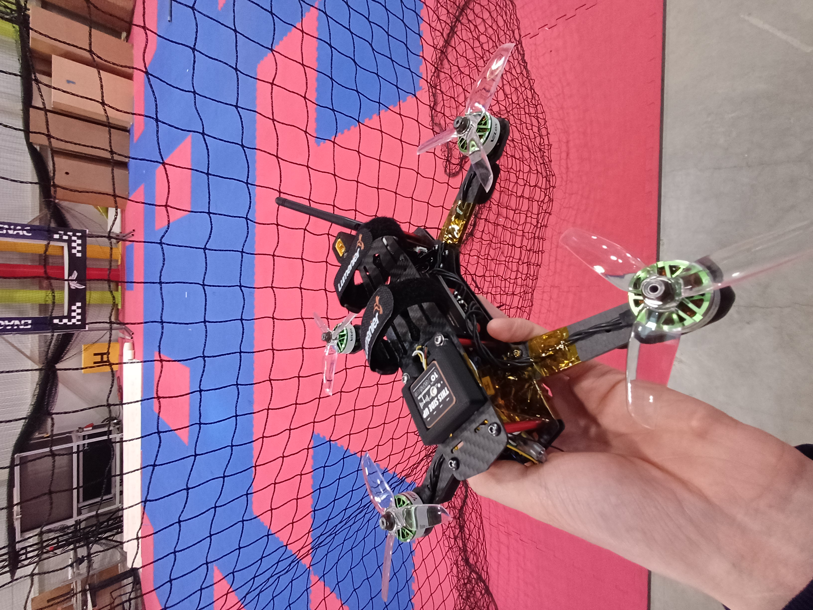

First UAV Build:
Real Software & Flight
Transitioning from simulation to reality: flashing the hardware, troubleshooting communication protocols,
and first indoor manual flights.

The QAV250 in its element: flying indoors at the ENAC Voliere in Toulouse.
From Virtual to Vertical
After getting comfortable with the PX4 stack in SITL simulation, it was time to move to the real thing. While the logic remains the same, hardware introduces a layer of complexity—communication protocols, firmware compilation for specific targets, and real-world electronics.
Configuration Hurdles
Getting the radio link operational was the first major software-on-hardware milestone. Using the RadioMaster Pocket Crush (ELRS version) forces to use ExpressLRS (ELRS), but integrating it with PX4 required precise parameter tuning. Specifically, attention was paid to:
- RC Setup: Mapping channels correctly within QGroundControl to match the transmitter's stick movements.
- PX4 Compilation: Ensuring the firmware was compiled with the correct CRSF (Crossfire) protocol support, which ELRS uses to communicate with the Pixhawk 6C Mini.
- Failsafes and switch mapping: Testing the arm/disarm/killswitch behavior to ensure the drone would disarm rather than stay powered.

Pre-flight testing: The QAV250 fitted with 4’’ propellers instead of the standard 5’’. This reduced the "punch" and total energy, making initial indoor spin-ups and hover checks much safer.
Ground Control Quirks
One unexpected challenge was the stability of the ground station software. Operating on Ubuntu, QGroundControl (QGC) proved to be somewhat "glitchy" during initial setup. Issues ranged from UI rendering lag to occasional connection drops when flashing firmware. Solving this required a mix of driver updates and sticking to stable AppImage releases to ensure a reliable link before the drone ever left the ground.
Flight Testing: Stabilized and Acro
The first "real" flights took place indoors at the ENAC Voliere. This provided a controlled, GPS-denied environment where I could focus purely on the drone's response to manual inputs.
- Stabilized Mode: Used for the maiden hover. The autopilot successfully used the IMU to keep the drone level, validating the sensor calibration and motor mixing.
- Acro Mode: Once the hover was stable, I tested manual rate control. Having practiced in the Liftoff simulator during the selection phase, the transition felt surprisingly natural.
Raw footage of the QAV250 indoor manual flight in Stabilized mode. You can see the drone maintaining its attitude while I test small corrections.
Future Goals
With manual flight verified, the foundation is laid for more complex operations. The next objectives for this platform include:
- Transitioning from indoor manual flight to outdoor autonomous missions.
- Implementing GPS-based waypoints and return-to-land (RTL) sequences.
Documentation
The detailed flight logs and software configuration report are currently being finalized.
Report: incoming.